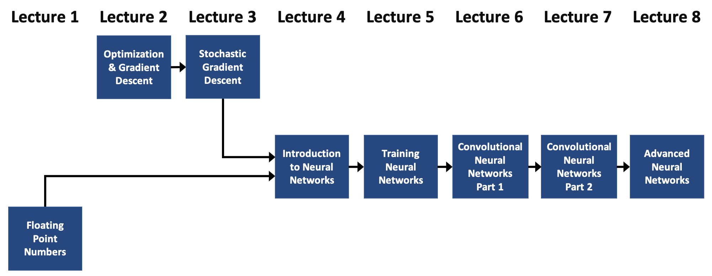

Introduction to the Course#
Mahmood Amintoosi, Spring 2024
Computer Science Dept, Ferdowsi University of Mashhad
I should mention that the original material was from Tomas Beuzen’s course.
About the Course#
Lectures 1-3: preparation for perceptron model (floating point numbers, regression, optimization, loss functions)
Lectures 4-8: deep learning (neural networks, convolutional neural networks, etc.)
In this course, I want to give you a really solid foundation upon which to build your computational intelligence skills. There will be a lot of focus on understanding fundamentals and implementing things from scratch.
Along the way, I’ll include and reference additional material in appendices that dive into some topics in more detail. These are completely optional and are there for those who wish to learn more about a particular topic.
Course Tools#
The course will use Python and PyTorch as the deep learning software. Course material will be predominantly in Jupyter notebooks. Everything has been compiled into a Jupyter book and the materials are accesible from the Github of the course.
Attribution#
These lectures are based on materials created by Tomas Beuzen and Mike Gelbart. I have forked their repository and am adapting it to meet my specific requirements and preferences. I extend my gratitude to them for their excellent work. 🌟
Course Roadmap#
